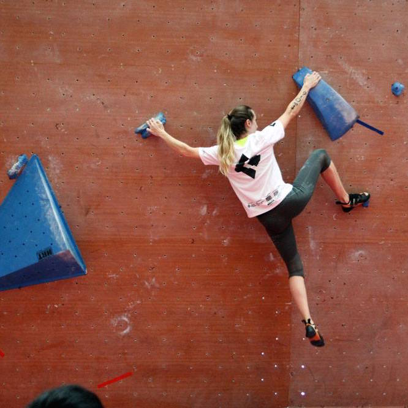
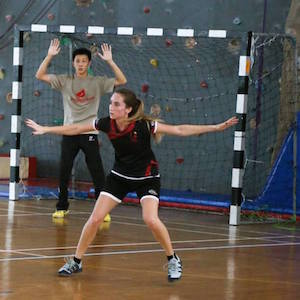

Interests

Climbing
I have climbed for 5 years and am still climbing here in Vietnam.
I specifically enjoy the precision of this sport, the problem solving dimension and the need to surpassing oneself.


Gymnastics
I have practiced this sport for 12 years and have learned how to be a persevering and hardworking person.